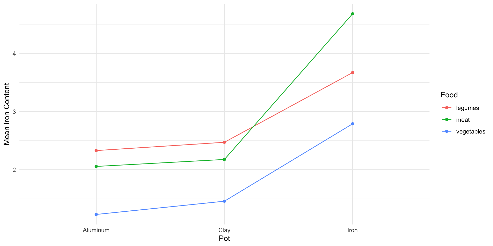

We have considered experiments with one treatment factor and one blocking factor
Now we will consider experiments with two treatment factors
The approach generalizes to more than two factors as well
Experimental Designs
Randomized complete block design (RCBD): 1 treatment factor with \(t\) levels, 1 blocking factor with \(b\) levels, exactly \(t\) experimental units in each block (one for each treatment level)
Factorial design: 2 or more factors, 1 or more observations per cell (replication)
A factorial design is called balanced if there is the same number of observations in each cell
Our focus will be on balanced factorial designs
Iron Content and Pot Type
Anemia, caused by iron deficiency, is a common form of malnutrition in developing countries
Does iron content in cooked food depend on the type of pot?
Do the results depend on the type of food?
Data from Adish et al. (1999) 1
ironpot dataset from HH package
Response: Iron (mg per 100 g of food)
Two Treatment factors:
Pot with 3 levels (\(a=3\)): “Aluminum”, “Clay”, “Iron”
Food with 3 levels (\(b=3\)): “meat”, “legumes”, “vegetables”
Meat, legume, and vegetable dishes cooked according to recipes from Ethiopian Nutritional Institute
Each dish was cooked 4 times in each type of pot (4 experimental units per cell, 9 cells)
Additive Statistical Model
Additive model for the \(k\)th observation at the \(i\)th level of factor \(A\) and the \(j\)the level of factor \(B\)
\(\alpha_i\) is the differential effect of the \(i\)th level of treatment \(A\)
\(\beta_j\) is the differential effect of the \(j\)th level of treatment \(B\)
\((\alpha\beta)_{ij}\) models the possible interaction between treatment \(A\) and \(B\)
\(\varepsilon_{ijk}\sim N(0,\sigma^2)\) represents the error
For example, if cooking a dish in an iron pot (\(i=3\)) raises the iron level more for meat (\(j=2\)) than it does for legumes or vegetables, then we would expect \((\alpha\beta)_{3,2}>0\)
Treatments \(A\) and \(B\)interact if the difference in response between two levels of \(A\) depends on the level of \(B\)
If an interaction is present, it is inappropriate to use an additive model
Properties of Interaction Model
The interaction coefficients satisfy \[\sum_{i=1}^a(\alpha\beta)_{ij}=\sum_{j=1}^b(\alpha\beta)_{ij}=0\]
The model can be written more simply as \[y_{ijk}=\mu_{ij}+\varepsilon_{ijk}\] where \(\mu_{ij}\) is the mean for level \(i\) of treatment \(A\) and level \(j\) of treatment \(B\)
Testing for an Interaction
Test for an interaction using the hypotheses
\(H_0: (\alpha\beta)_{ij} = 0,\) for all \(i=1\ldots a\), \(j=1\ldots b\)
\(H_A:\) At least one \((\alpha\beta)_{ij}\) is different
If interaction is present, we do not test for main effects
If there is not a significant interaction, we can drop the interaction and use the additive model instead
We can only test for an interaction if there is replication, otherwise there are not enough degrees of freedom
ANOVA table with interaction
lm(Iron ~ Pot * Food, data = ironpot) |>anova() |>tidy()
# A tibble: 4 × 6
term df sumsq meansq statistic p.value
<chr> <int> <dbl> <dbl> <dbl> <dbl>
1 Pot 2 24.9 12.4 92.3 8.53e-13
2 Food 2 9.30 4.65 34.5 3.70e- 8
3 Pot:Food 4 2.64 0.660 4.89 4.25e- 3
4 Residuals 27 3.64 0.135 NA NA
ANOVA table key (\(n\) = number of observations in each cell)
term
df
sumsq
meansq
statistic
Treatment A
\(df_A=a-1\)
\(SSA\)
\(MSA=SSA/df_A\)
\(F=MSA/MSE\)
Treatment B
\(df_B=b-1\)
\(SSB\)
\(MSB=SSB/df_B\)
\(F=MSB/MSE\)
Interaction AB
\(df_{AB}=(a-1)(b-1)\)
\(SSAB\)
\(MSAB=SSAB/df_{AB}\)
\(F=MSAB/MSE\)
Residuals (error)
\(df_E=ab(n-1)\)
\(SSE\)
\(MSE=SSE/df_E\)
There is a significant interaction between food type and plot type
There is convincing evidence that the response of iron content to pot type depends on the type of food
Interaction sum of squares
The model predicts the response (iron content) for an observation with level \(i\) for treatment \(A\) and level \(j\) for treatment \(B\) using the corresponding cell sample mean \[\widehat{y_{ijk}}=\bar{y}_{ij}\]
The sum of squares for the interaction term is \[SSAB = n\sum_{i=1}^{a}\sum_{j=1}^{b}\left(\bar{y}_{ij}-\bar{\bar{y}}\right)^2-SSA - SSB\]
Cell Means
When an interaction is present we report the cell means
An interaction plot shows how the cell means vary with respect to the levels of one of the treatments
Separate line plots for each level of the other treatment

Interaction plot for food type and pot type.
Interaction Effects
Interaction effects compare cell means across levels of both factors
For example, \[(\bar{y}_{12}-\bar{y}_{32})-(\bar{y}_{13}-\bar{y}_{33})=(2.06-4.68)-(1.23-2.79) = -1.06\] is the interaction effect that compares the difference in cell means for aluminum (\(i=1\)) and iron (\(i=3\)) pots across the meat (\(j=2\)) and vegetable (\(j=3\)) food types
Toothbrushes
Is there a difference in the effectiveness of different types of toothbrushes in removing plaque?
Do the results depend on sex of the toothbrusher?
tootbrush dataset from GLMsData package
Response: plaque_rem (difference in a plaque index after brushing - before brushing)
Independent variables:
Sex with 2 levels (\(a=2\)): “F”, “M”
Toothbrush with 2 levels (\(b=2\)): “Conventional”, “Hugger”
There is not a significant interaction
We should consider an additive model instead
lm(plaque_rem ~ Sex * Toothbrush, data = toothbrush) |>anova() |>tidy()
# A tibble: 4 × 6
term df sumsq meansq statistic p.value
<chr> <int> <dbl> <dbl> <dbl> <dbl>
1 Sex 1 6.45 6.45 15.5 0.000268
2 Toothbrush 1 0.751 0.751 1.80 0.186
3 Sex:Toothbrush 1 1.13 1.13 2.70 0.107
4 Residuals 48 20.0 0.416 NA NA
There is convincing evidence of an association between sex and the amount of plaque removed
However, we are unable to reject the null hypothesis for the effect of toothbrush type
lm(plaque_rem ~ Sex + Toothbrush, data = toothbrush) |>anova() |>tidy()
# A tibble: 3 × 6
term df sumsq meansq statistic p.value
<chr> <int> <dbl> <dbl> <dbl> <dbl>
1 Sex 1 6.45 6.45 15.0 0.000325
2 Toothbrush 1 0.751 0.751 1.74 0.193
3 Residuals 49 21.1 0.431 NA NA
Main effects
The main effects compare the marginal means for one factor
For example, \(\bar{y}_{1.}-\bar{y}_{2.}\) compares means for females (\(i=1\)) and males (\(i=2\))
And, \(\bar{y}_{.1}-\bar{y}_{.2}\) compares means for conventional toothbrushes (\(j=1\)) and hugger toothbrushes (\(j=2\))
It is inappropriate to consider main effects when there is an interaction
We can use the TukeyHSD function calculate the main effects, including confidence intervals
This is also appropriate for follow-up tests comparing pairs of marginal means (when there are more than 2 levels)
aov(plaque_rem ~ Sex + Toothbrush, data = toothbrush) |>TukeyHSD()
Tukey multiple comparisons of means
95% family-wise confidence level
Fit: aov(formula = plaque_rem ~ Sex + Toothbrush, data = toothbrush)
$Sex
diff lwr upr p adj
M-F 0.70625 0.3392677 1.073232 0.0003245
$Toothbrush
diff lwr upr p adj
Hugger-Conventional 0.2403846 -0.1255103 0.6062796 0.1928874